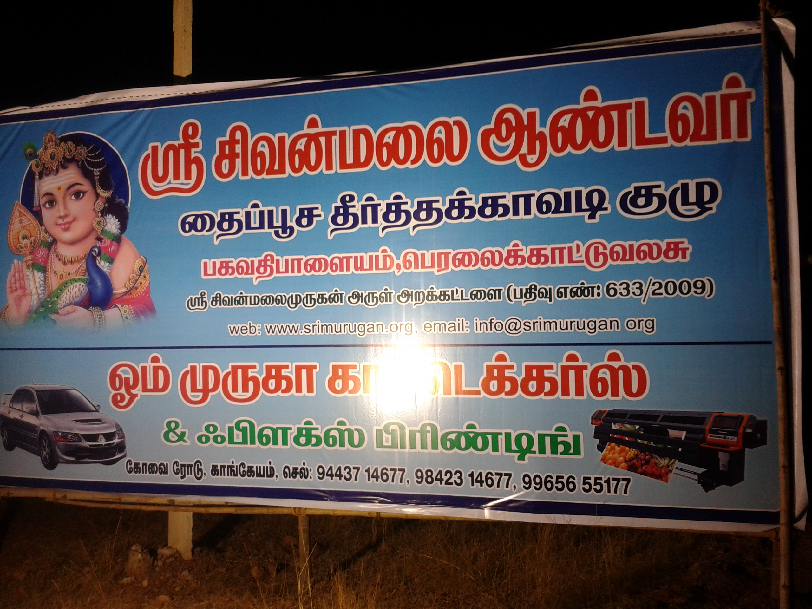

Kavadi
Sri Sivanmalai Murugan Arul Trust (Reg No:633/2009) was founded and organised by peoples of Baghavathipalayam and Peralaikattuvalasu. Every year we celeberate Sivanmalai Temple Car Festival. Trust has own land near Keeranur Road,Sivanmalai. We provide foods to all Sivanmalai Murugan devotees on Thai Poosam of Every Year.